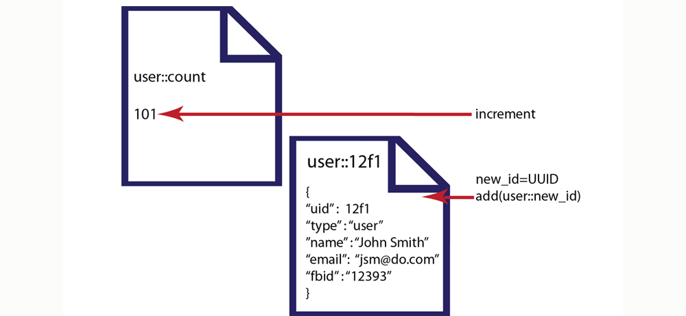
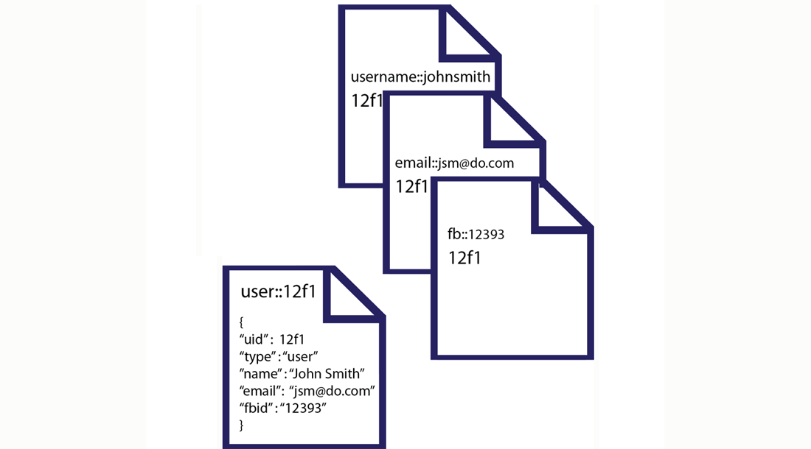
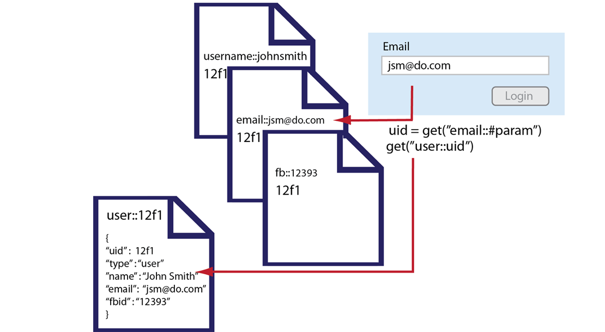

Using reference documents for lookups
There are two approaches for finding information based on specific values. One approach is to perform index and querying with views in Couchbase. The other approach is to use supporting documents that contain the key for the main document. The latter approach may be preferable even with the ability to query and index in Couchbase because the document-based lookup can still provide better performance if you use the lookup frequently. In this scenario, you could separate documents to represent a main application object, and create additional documents to represent alternate values associated with the main the document.
When you store an object, you use these supporting documents which enable you to later lookup the object with different keys. For instance, if you store a user as a document, you can create additional helper documents so that you can find the user by email, Facebook ID, TwitterID, user name, and other identifiers beside the original document key.
To use this approach, you should store your original document and use a predictable pattern as the key for that type of object. In this case we specifically create a unique identifier for each user so that we avoid any duplicate keys. Following the example of performing a user profile lookup, imagine we store all users in documents structured as follows:
{
"uid"
"type"
"name"
"email"
"fbid"
}
To keep track of how many users are in our system, we create a counter, user::count and increment it each time we add a new user. The key for each user document will be in the standard form of user::uuid. The records that we will have in our system would be structured as follows:
In this case we start with an initial user count of 100. In the Ruby example that follows we increment the counter and then set a new user record with a new unique user id:
# => setup default connection
c = Couchbase.new
# => initialize counter to 100
c.set("user::count", 100)
# => increment counter
c.incr("user::count")
# => get unique uuid, new_id = 12f1
new_id = UUID.timestamp_create().to_s
user_name = "John Smith"
user_username = "johnsmith"
user_email = "jsm@do.com"
user_fb = "12393"
# save User to Couchbase
user_doc = c.add("user::#{new_id}", {
:uid => new_id,
:type => "user",
:name => user_name,
:email => user_email,
:fbid => user_fb
})
Here we create a default connection to the server in a new Couchbase client instance. We then create a new record user::count with the initial value of 100. We will increment this counter each time we add a new user. We then generated a unique user ID with a standard Ruby UUID gem. The next part of our code creates local variables which represent our user properties, such as John Smith a the user name. In the past part of this code we take the user data and perform an add to store it to Couchbase. Now our document set is as follows:
Then we store additional supporting documents which will enable us to find the user with other keys. For each different type of lookup we create a separate record. For instance to enable lookup by email, we create a email record with the fixed prefix email:: for a key:
# using same variables from above for the user's data
# add reference document for username
c.add("username::#{user_username.downcase}", new_id) # => save lookup document, with document key = "username::johnsmith" => 101
# add reference document for email
c.add("email::#{user_email.downcase}", new_id) # => save lookup document, with document key = "email::jsmith@domain.com" => 101
# add reference document for Facebook ID
c.add("fb::#{user_fb}", new_id) # => save lookup document, with document key = "fb::12393" => 101
The additional ‘lookup’ documents enable us to store alternate keys for the user and relate those keys to the unique key for the user record user::101. The first document we set is for a lookup by username, so we do an add using the key username::. After we create all of our lookup records, the documents in our system that relate to our user appear as follows:
Once these supporting documents are stored, we can attempt a lookup using input from a form. This can be any type of web form content, such as an entry in a login, an item from a customer service call, or from an email support system. First we retrieve the web form parameter:
#retrieve input from a web form
user_username = params["username"]
# retrieve by user_id value using username provided in web form
user_id = c.get("username::#{user_username.downcase}") # => get the user_id # => 12f1
user_hash = c.get("user::#{user_id}") # => get the primary User document (key = user::12f1)
puts user_hash
# => { "uid" => 101, "type" => "user", "name" => "John Smith", "email" => "jsmith@domain.com", "fbid" => "12393" }
#get additional web form parameter, email
user_email = params["email"]
# retrieve by email
user_id = c.get("email::#{user_email.downcase}") # => get the user_id # => 12f1
user_hash = c.get("user::#{user_id}") # => get the primary User document (key = user::12f1)
#get facebook ID
user_fb = auth.uid
# retrieve by Facebook ID
user_id = c.get("fb::#{user_fb}") # => get the user_id # => 12f1
user_hash = c.get("user::#{user_id}") # => get the primary User document (key = user::12f1)
The first part of our code stores the username from a web form to variable we can later use. We pass the lowercase version of the form input to a get to find the unique user id 12f1. With that unique user id, we perform a get with the key consisting of user::12f1 to get the entire user record. So the supporting documents enable you to store a reference to a primary document under a different key. By using a standard key pattern, such as prefix of email:: you can get to the primary user document with an email. By using this pattern you can lookup an object based on many different properties. The following illustrates the sequence of operations you can perform, and the documents used when you do an email-based lookup:
The other use case for this pattern is to create categories for objects. For instance, if you have a beer, keyed with the id beer::#{sku}, you can create a product category and reference products belonging to that category with they key category::ales::count. For this category key, you would provide a unique count and the category name, such as ales. Then you would add products to the content that references the SKU for your beers. For instance, the key-value pair might look like this:
{
"product" : "#{sku}"
}
When you perform a lookup, you could also do a multi-get on all items that are keyed category::ales. This way you can retrieve all primary records for ales. For more information about multi-get, see Retrieving multiple keys.